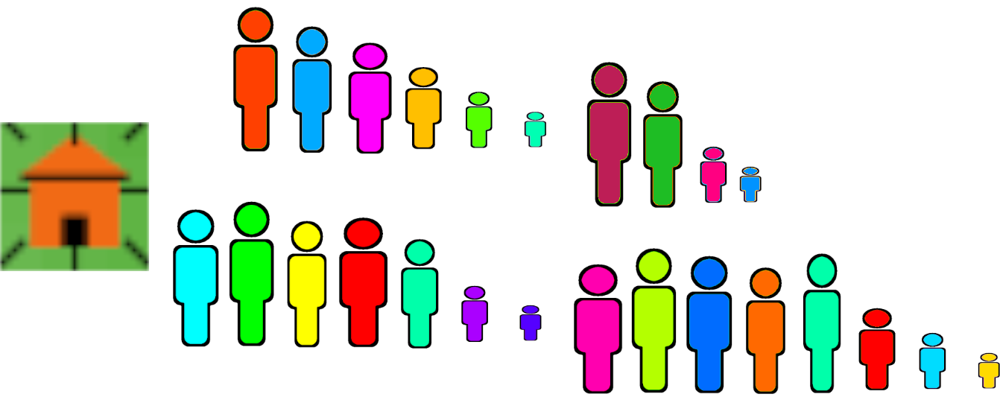
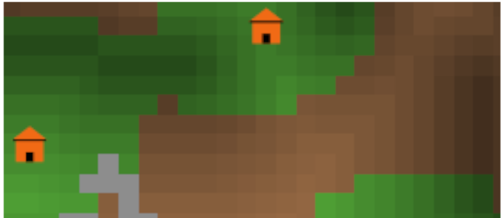
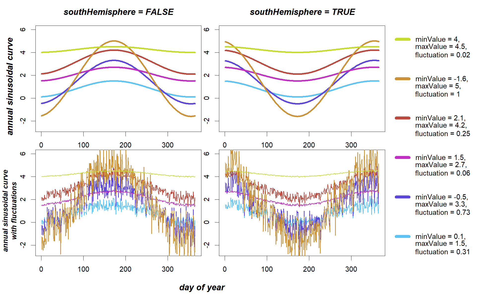
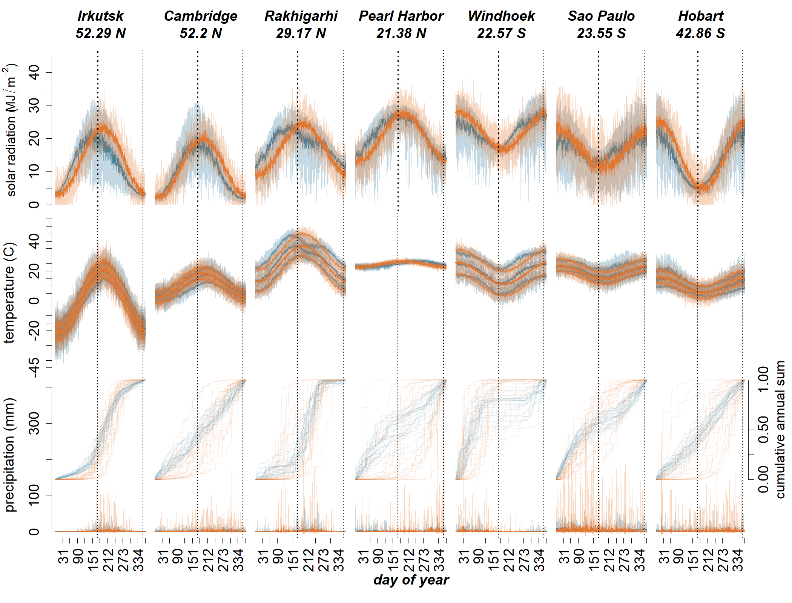
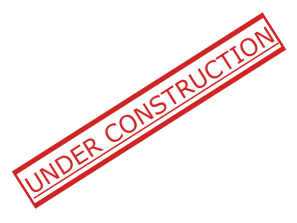
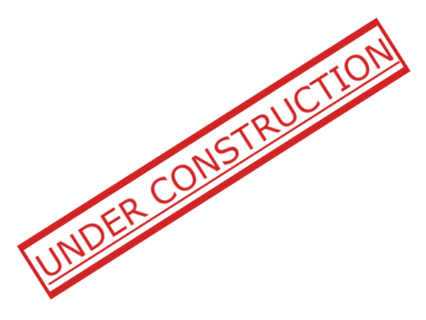

The Indus Village model
Modelling population, agriculture and climate change in the Indus Civilisation
Andreas Angourakis,
Jennifer Bates,
Jean-Phillipe Baudouin,
Alena Giesche,
Joanna Walker,
M. Cemre Ustunkaya,
Nathan Wright,
Ravindra N. Singh and
Cameron A. Petrie
https://andros-spica.github.io/RDMed-Angourakis-et-al-2021/index.html?print-pdf (printable version)
1. The context: The Indus Civilisation
.png) Avantiputra7, CC BY-SA 3.0, via Wikimedia Commons
Avantiputra7, CC BY-SA 3.0, via Wikimedia Commons
One of the great ‘Old World’ Bronze Age civilisations
First cities in South Asia ('Mature Harappan')
Five known major urban centres
... and a multitude of smaller settlements


multi-cropping
Agriculture
- Main crops:
- barley/wheat (winter)
- millets/rice (summer)
- Pulses
- Other
Bates, Petrie & Singh 2018, Archaeol Anthropol Sci

Other food production


- Animal husbandry:
zebu, water buffalo, sheep, goat, pigs - Herding and specialised animal husbandry
( Chakraborty et al. 2018 , Lightfoot et al. 2020 ) - Fishing, hunting, gathering
Bronze Age world system


T. C. Wilkinson 2014, TYING THE THREADS OF EURASIA, Fig. 7.4 | R. W. Law 2011, Inter-Regional Interaction and Urbanism in the Ancient Indus Valley, Fig. 13.6


summer rain, winter rain
J.-P. Baudouin (PhD dissertation)

Climate change

- Urban phase
(Mature Harappan, c. 4.5 to 4.3 ka BP)
→ stronger winter precipitation - End of urban phase
(Mature to Late Harappan, >c. 4.1 ka BP)
→ decrease in both the summer and winter precipitation
2. Overview
Image source: Minecraft Wiki (© Mojang Studios), via GamepediaEnd-goals
Explore human adaptation to the variability
in landscapes of NW India during the Mature Harappan
Expose the sustainability of
food production regimes,
mainly in terms of cropping strategies,
in front of abrupt climate change
- Adaptative? (How? When?)
- detrimental to surplus generation and
urbanisation?
(Good for villages is bad for cities?)
Rationale
- rural settlement(s)
- local scale (max. 25 km², 2500 units of 1 ha)
- daily iterations
- food production/consumption
- Implementation in NetLogo, documentation in pseudocode diagrams and R markdown
- Explore parameters (sensitivity analysis)
- Explore scenarios
(procedural generation, alternative designs)
Entities
| Household: propinquity and co-residence, rather than kinship | |
|  | Group: set of households, united by kinship or alliance; one or more may form a 'settlement' |
|  | Land units: vary in elevation, soil properties, soil and surface water, cover and land use |


Modular design
- Weather model
- Soil Water Balance model
- Land model
- Crop model
- Household Demography model
- Storage model
- Nutrition model
- Exchange model
- Household Position model
Why not use contemporary or proxy-based data?
Issues:
- precision
- anachronism
- data-driven simulations
However, see Contreras, Guiot, Suarez and Kirman (2018)
3. Weather model
Image source: blackreaper709 (© Mojang Studios), via redditWeather model | Target output

Angourakis et al. (in preparation, A), data source: NASA Power
Weather model | Submodels

| annual sinusoidal curve solar radiation, temperature |
double logistic curve precipitation (annual cumulative → absolute) |
Angourakis et al. (in preparation, A)
Weather model | Dynamics

Angourakis et al. (in preparation, A)
files available at the Indus Village model repository
Weather model | Validation
Angourakis et al. (in preparation, A)
4. Soil water model
Image source: Marsh Davies (© Mojang Studios)
{kind=link}
Adapted from
the ARID Soil Water model
Wallach et al. 2014,
Working with Dynamic Crop Models,
pp. 24, 138
- One-Layer bucket soil model
- R implementation published
-
Outcomes Reference Index for Drought (ARID)
Woli et al. 2012, Agronomy Journal, 104(2):287-300
Soil Water model | Dynamics

Angourakis et al. (in preparation, B),
files available at the Indus Village model repository
Precipitation and water stress
A point of comparison...
South France (2007)

Hissar, Haryana, NW India (1995)
Input data (Hissar) obtained at: NASA POWER
5. Land model
Image source: Marsh Davies (© Mojang Studios)Land model | Target output

J. Walker (PhD dissertation)
Land model | Landform


features → noise + smoothing → XY slopes → valley slope
Land model | Flows


flow direction and accumulation (+river accumulation)
Algorithms adapted from Huang & Lee 2015 , Jenson & Domingue 1988
Land model | Soil depth and texture

|

|

|
| depth | texture (% sand, silt, clay) |
texture type (USDA) |
Land model | Ecological communities

|

|
| composition (% grass, brush, wood) |
cover type |
Land model | Interface

Angourakis et al. (in preparation, B),
files available at the Indus Village model repository
I1. Integrated Land Unit model

Angourakis et al. (in preparation, B)
files available at the Indus Village model repository
6. Crop model
Image source: Daniel Davies and Brett Galkowski (© Mojang Studios)Crop model

Angourakis et al. (in preparation, C),
based on the SIMPLE crop model (Zhao et al. 2019)
files available at the Indus Village model repository
Expected relationship between ARID and crop yield

Angourakis et al. (in preparation, C)
files available at the Indus Village model repository
I2. Integrated Land Crop model
 

Angourakis et al. (in preparation, C)
Expected relationship between ARID and crop yield (II)

Angourakis et al. (in preparation, C)
files available at the Indus Village model repository
Conclusions
- Modelling for the long haul
- K.I.S.S. at your discretion
→Balance simplification and complexity - There are many models "out there" (replicability)
- Importance of the cycle design-document-refactor
- Share and document (as if there was no tomorrow!)
'TwoRains' project
ERC, 2015-2020
Acknowledgements
Thanks to the Land, Water and Settlement and TwoRains teams:
Aftab Alam, Alessandro Ceccarelli, Sagorika Chakraborty,
Sudarshan Chakradhari, Arti Chowdhary, Yama Dixit, Charly French, Adam Green,
Henry Green, Lily Green, David Hodell, Penny Jones, Carla Lancelotti, Emma Lightfoot, Frank Lynam,
Sayantani Neogi, Hector Orengo, Arun Kumar Pandey, Danika Parikh, Vikas Pawar, Amit Ranjan,
David Redhouse, Dheerendra Pratab Singh, & Akshyeta Suryanarayan.
Special thanks also to the Department of AIHC and Archaeology, BHU, the European Research Council (ERC),
and the UK-India Education and Research Initiative (UKIERI) for support and funding, and to the Archaeological
Survey of India for permission to carry out the work.
THANK YOU FOR YOUR ATTENTION!
https://andros-spica.github.io/RDMed-Angourakis-et-al-2021/index.html?print-pdf (printable version)